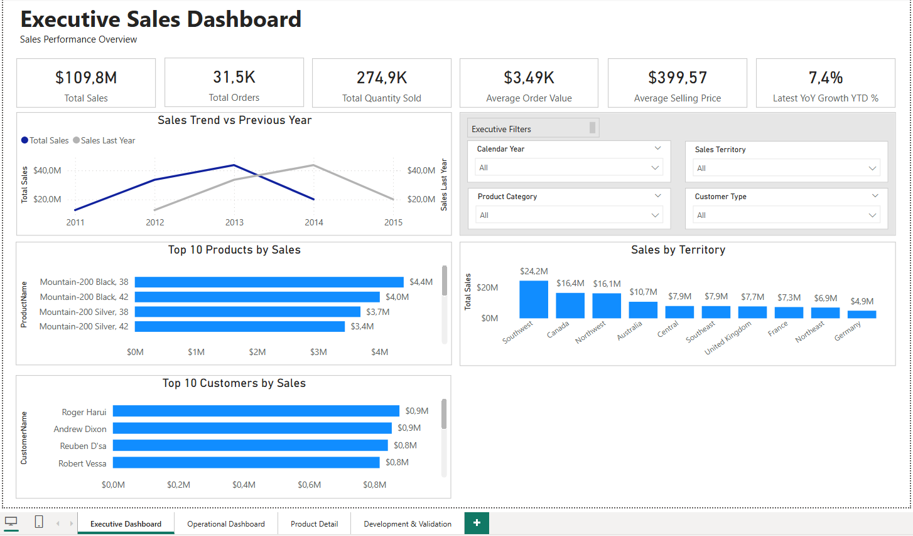
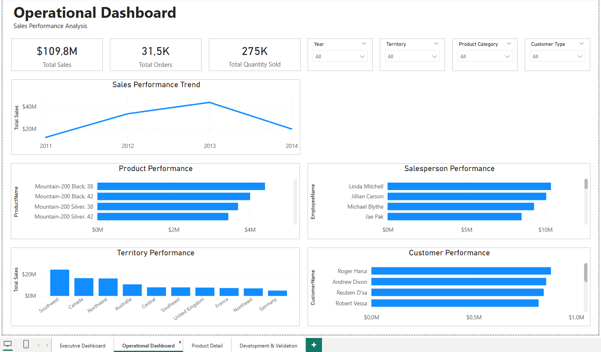

Business Intelligence & Reporting
Developing interactive dashboards and reporting solutions that transform business data into clear, actionable information.
Helping organizations turn data into business value through analytics, business intelligence, cloud solutions, and digital transformation.
Data Analyst | Business Intelligence | Azure SQL | Digital Transformation
Combining analytical thinking, practical technical skills, and business understanding to support better decisions.
I am a Data Analyst with hands-on experience in SQL Server, Power BI, and business intelligence solutions. I combine technical expertise with a strong understanding of business processes to transform data into meaningful insights and support informed decision-making.
My approach goes beyond developing reports and writing SQL queries. I focus on understanding business requirements, identifying analytical opportunities, and developing practical solutions that help organizations make better use of their data.
I am continuously developing my expertise in cloud data solutions, Microsoft Azure, and modern analytics technologies, with the goal of progressing into Data Consultancy and Digital Transformation.
Discover My Work →Understanding business challenges and analytical requirements before designing technical solutions.
Hands-on work with SQL Server, Power BI, data modeling, DAX, and Azure SQL Database.
Building knowledge in cloud analytics, Microsoft Fabric, and digital transformation, with a focus on future consulting opportunities.
Combining business understanding with practical technical skills to develop reliable analytics solutions and support data-driven initiatives.
Developing interactive dashboards and reporting solutions that transform business data into clear, actionable information.
Working with SQL databases, analytical data structures, and queries to support accurate, efficient, and maintainable reporting.
Applying practical knowledge of SQL Server migration to Azure SQL Database, including data reconciliation and solution validation.
Connecting business requirements with data technologies and analytical approaches to support process improvement and digital transformation initiatives.
Exploring real-world business challenges through structured analytics, business intelligence, and cloud data solutions.
Portfolio consulting simulation using the AdventureWorks2022 sample database.
Designed and implemented an end-to-end retail analytics solution, from business requirements and SQL reporting structures to interactive Power BI dashboards and Azure SQL migration.


Learning through practical projects, professional communities, and emerging technologies — and applying that knowledge to real business challenges.
Participating in professional data events helps me exchange ideas, learn from experienced practitioners, and build connections across the international data community.
Key interests: SQL Server, Power BI, Microsoft Fabric, AI, and professional networking.
I strengthen my technical skills through hands-on projects that connect business requirements with practical data solutions.
I am expanding my understanding of modern analytics technologies and exploring how they can support more effective business decisions and digital transformation.
My goal is to combine modern technical capabilities with a business-oriented approach to data consultancy.
I'm interested in connecting with data professionals, recruiters, and organizations working in data analytics, business intelligence, cloud solutions, and digital transformation.
I'm particularly interested in opportunities where I can combine technical skills with business understanding, contribute to international teams, and continue developing toward data consultancy.
Get in Touch →Feel free to reach out or explore my professional work.
Professional Email premetarov@gmail.com LinkedIn linkedin.com/in/borko-premetarov GitHub Portfolio github.com/borkomkd